Ashdod Port • Interactive website • 2025
A container’s story
From desktop interaction to mobile, designed and handed off for production.
- Client
- Ashdod Port
Innovation division - Sector
- Logistics, Innovation
- Duration
- 2 months, 2025
- Team
- Tal Sofia, Lead designer
Netta Zoe
Yoram Berkowich, PM
The project
An interactive tour of a working port.
A Container’s Story is an interactive tool built for Ashdod Port’s innovation division. Users explore the port’s main operational zones, learn how each area works, and discover the startup solutions the port offers.
My role: translate an existing desktop experience to mobile and hand it off for production.
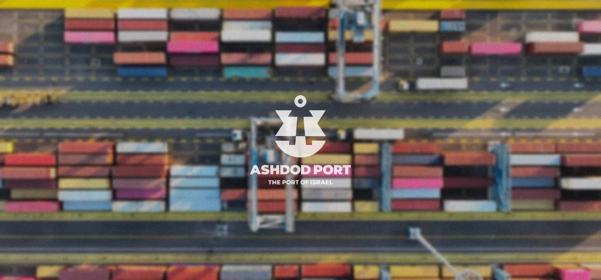
The challenge
A spatial desktop experience, on a small touch screen.
The desktop version was built around spatial exploration and rich interactions. Moving it to mobile meant working within real constraints: a smaller screen, touch gestures and limited space, without flattening the experience or losing what made it work.
Context: the desktop version.
Problem statement
How might we bring a rich, spatial desktop experience to mobile without losing the interactions that made it work?
The solution
Rethinking navigation and gestures for touch.
I rethought navigation and gestures to fit mobile naturally, keeping the sense of exploration without forcing desktop patterns onto a smaller screen. Alongside that, I structured the design system and delivered a clean, developer-ready handoff.
Main page
A wandering experience, guided by animation.
On the home screen, users drag across an aerial view of the port to find each area. Tapping an area opens a drawer with its story and challenges; scrolling the drawer reveals a video of that zone.
Main page
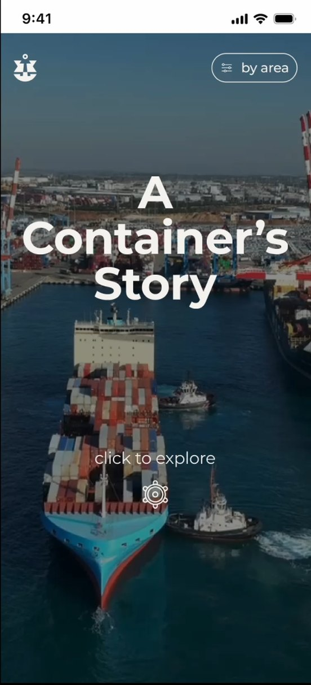
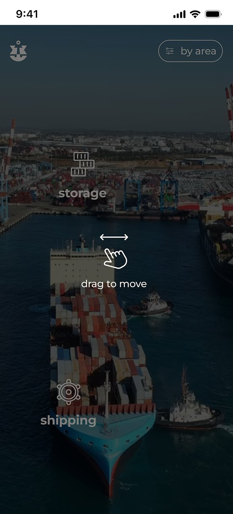
Shipping page
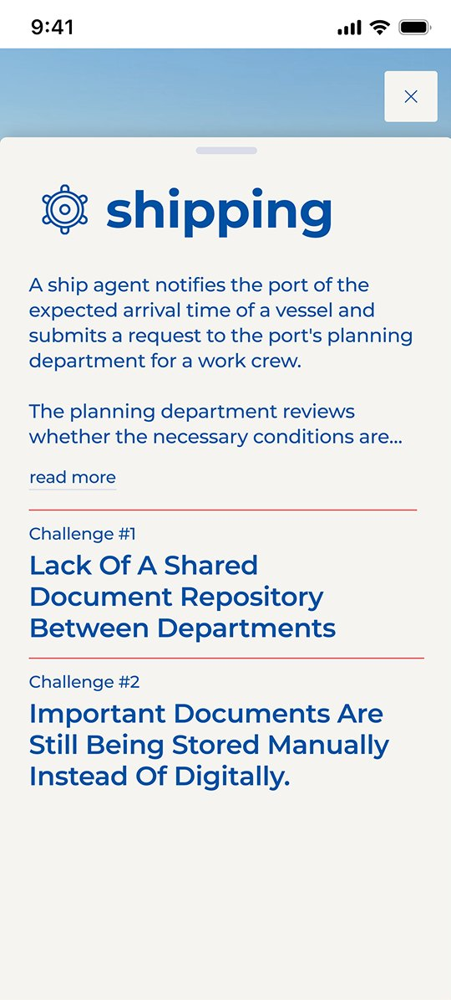
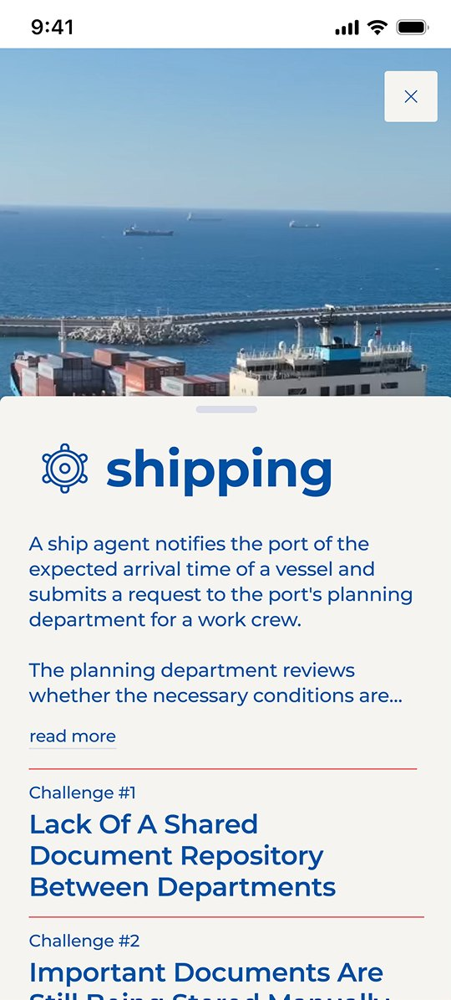
Startups
From a stacked deck to a swipeable carousel.
On desktop the startups fan out as a deck of cards. On mobile they become a gallery: tapping a card flips it and switches to a scrolling view with an animated transition, and the card in the middle is always the red, active one.
Screen breakdown
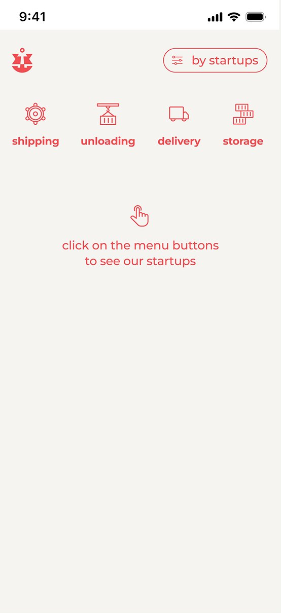
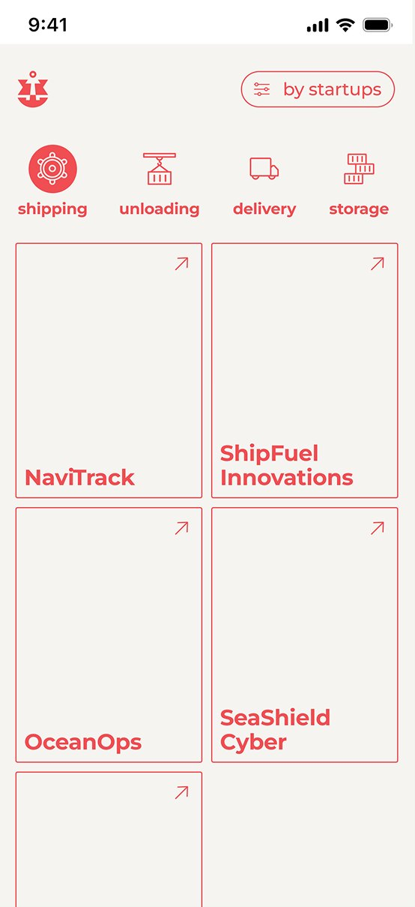
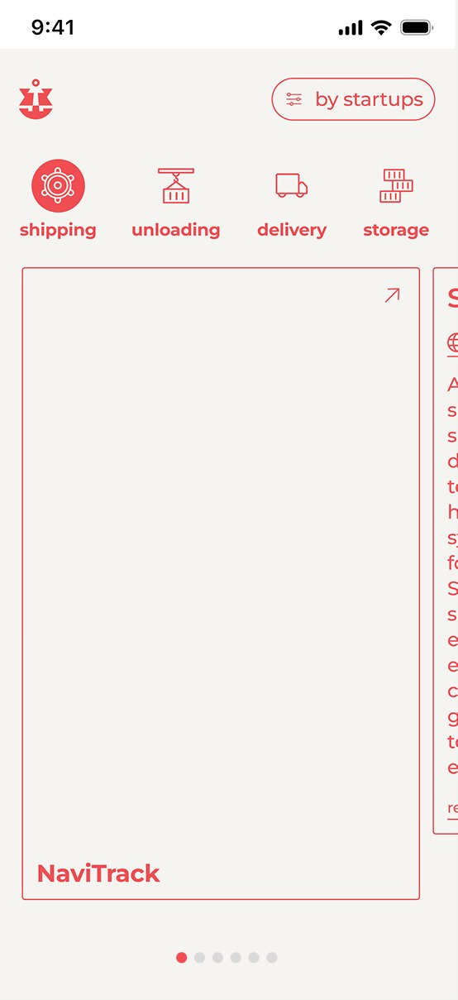
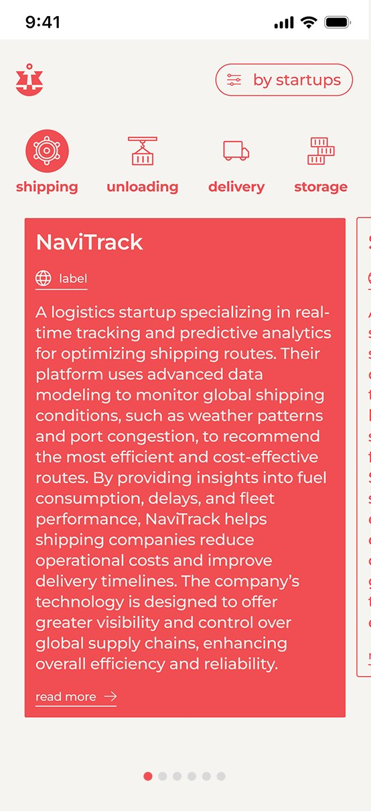
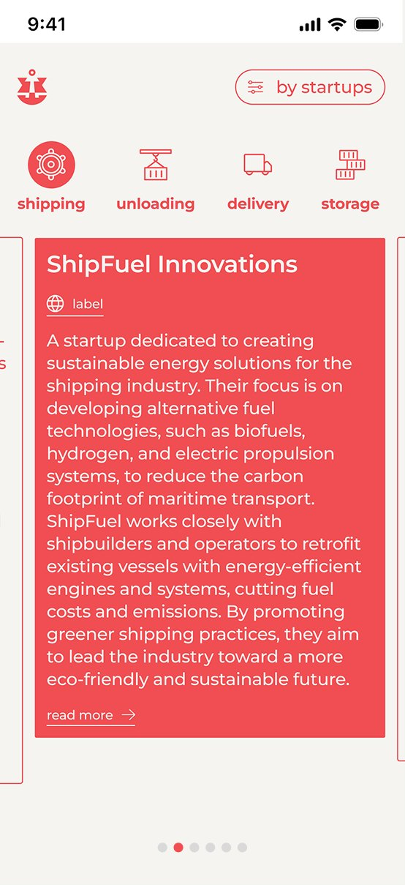
Challenges
Every area, its challenges, one tap away.
On desktop the challenges sit on a blueprint map of the port. On mobile each area becomes an accordion: open one to see its wireframe illustration and the challenges the port is looking to solve.
Screen breakdown
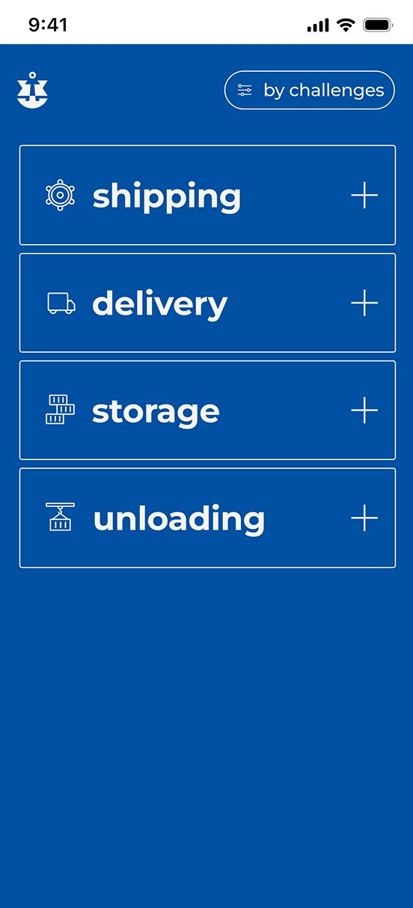
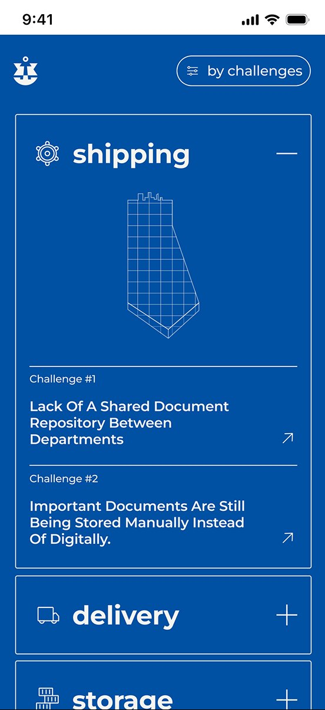
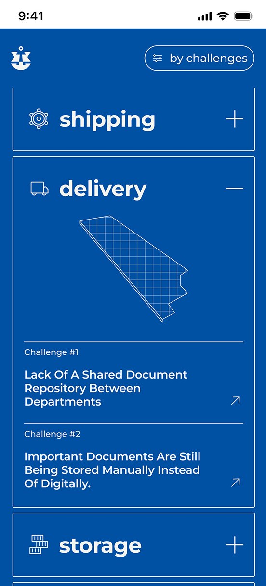
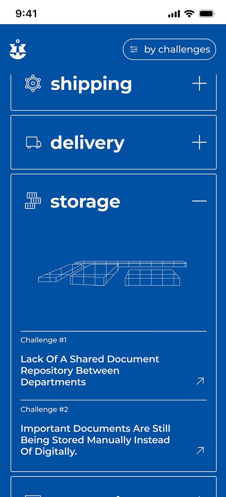
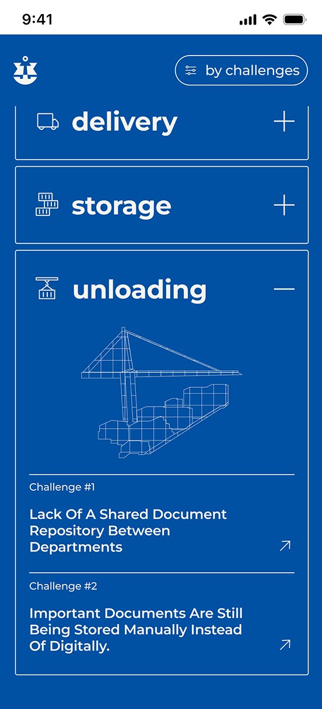
Handoff for dev
Ready for production.
Every screen, state and transition was organized for developers, with the design system structured so the mobile build could follow the same foundation.
Next project


Digital payment vouchers for home buyers
Leumi Bank • Dashboard • 2026